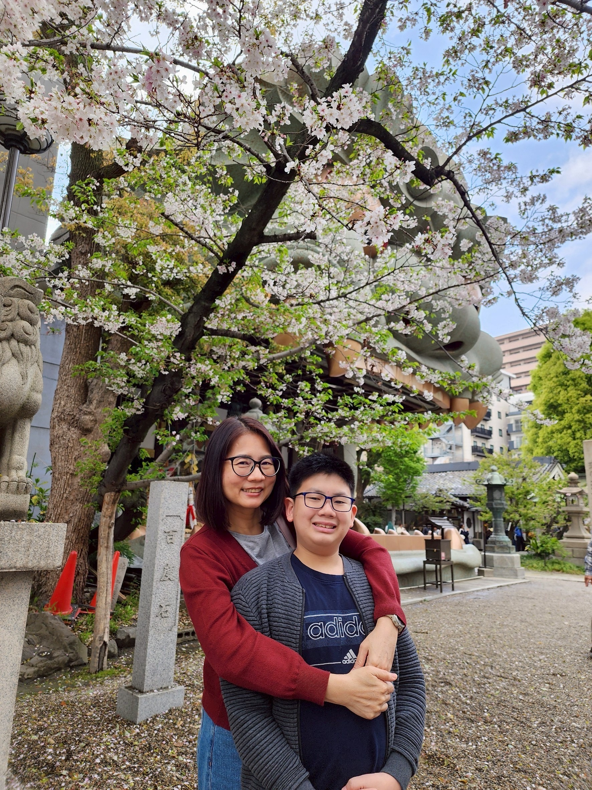
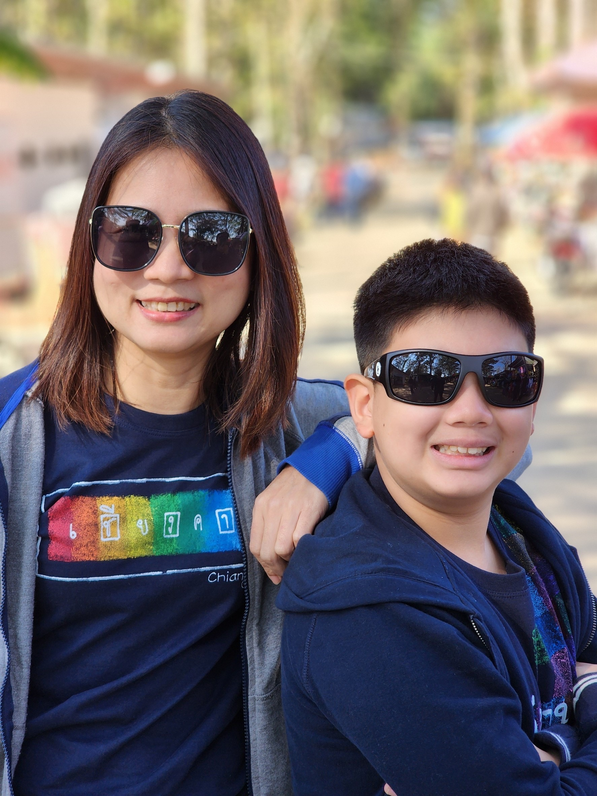
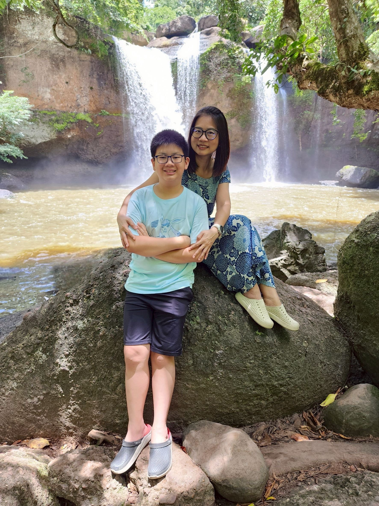

Arena of Valor (RoV)
สิ่งที่อยากบอกแม่
❤️สุขสันต์วันแม่ครับ ขอบคุณที่ดูแลผมถึงบางครั้งผมจะดื้อ ผมจะตั้งใจเรียนและผมจะเป็นคนดีครับ ผมรักแม่มากกว่าใครบนโลกใบนี้! ขอบคุณที่เป็นแม่ที่ดีที่สุดในโลกคร้าบบบ❤️
 
บทกลอนมอบให้แม่
มีกี่คนให้เราได้ทั้งชีวิตไม่เคยคิดจะทอดทิ้งหรือทำร้าย
ใครคนนั้นท่านก็คือแม่เราไง
แม่ทุกกายลูกสุขใจแม่ยอมทน
บทเพลงที่มอบให้แม่